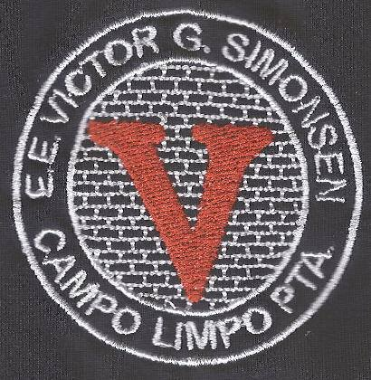

Fernanda Miranda
Início
Escolaridade
Portifólio
Escolaridade
Ensino Fundamental

E.E. Victor Geraldo Simonsen
Bom, não me lembro ao certo quando entrei nessa escola mas sai de la em 2011 se não me engano. Sai de lá quando estava na 8ª série, hoje chamada de 9º Ano.
Ensino Médio
E.E. Frei Dagoberto Romag
Após sair do "Victor" essa foi minha escola, digo "minha" porque minha mãe era coordenadora de lá kkkkkk brincadeiras a parte, fiquei aqui até passar para o segundo colegial, em 2013, que foi quando minha famólia mudou para Tupã, aonde moro hoje.
E.E. Luiz de Souza Leão
Chegando em Tupã o "Souza" foi a primeira escola aonde estudei, fiquei por 3 meses só.
E.E. Irene Resina Migliorucci
Sai do "Souza" para cá, adivinha o porque, sim, minha mãe virou coordenadora do Irene também. E foi nessa escola aonde me formei no ensino médio.
Ensino Superior
FATEC - Shunji Nishimura
E finalmente chegamos na nossa queridísiima FATEC, aonde estou cursando BIG DATA NO AGRONEGÓCIO, no segundo ano, 3º Semestre, mas é legal vocês saberem que essa é a minha terceira faculdade rsrs. Antes dela tentei algo voltado ao meio ambiente (peguei exame em todas as matérias do primeiro Semestre :/ ) mas não era muito a minha praia, e depois tentei Engenharia da Computação, mas era EAD e definitivamente eu ODEIO EAD.